CODING AGENTS AS PIXEL WORLD MODELS
traex/DeepSeek-V4.1-Flash · common50_0009
点击播放 · 原生 RGB 像素
逐轮保存的候选
回放视频、检查图与代码变化。
每份候选均可单独播放。实际图片检查记录在下方工具轨迹中。
候选 01播放与检查图
点击播放 · 原生 RGB 像素
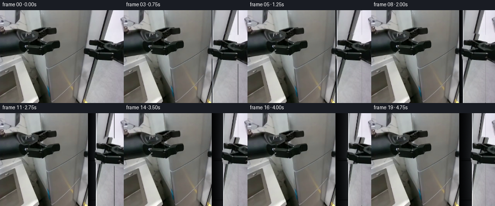
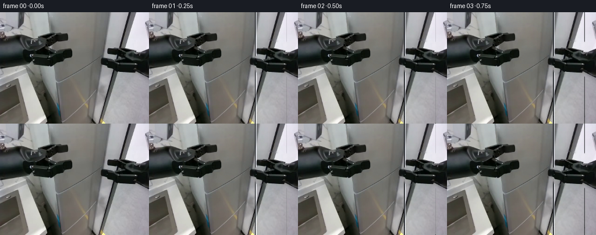
展开代码变化
--- 上一保存版本
+++ 本次保存版本
@@ -0,0 +1,248 @@
+from pathlib import Path
+
+import numpy as np
+from PIL import Image, ImageDraw
+from scipy.ndimage import (
+ binary_dilation,
+ distance_transform_edt,
+ gaussian_filter,
+ map_coordinates,
+)
+
+import artifact_io
+
+
+ROOT = Path(__file__).resolve().parent
+FRAME_SIZE = (256, 192)
+
+
+def _polygon_mask(points, shape, blur=0.65):
+ mask = Image.new("L", (shape[1], shape[0]), 0)
+ ImageDraw.Draw(mask).polygon(points, fill=255)
+ alpha = np.asarray(mask, dtype=np.float32) / 255.0
+ if blur:
+ alpha = gaussian_filter(alpha, blur)
+ return np.clip(alpha, 0.0, 1.0)
+
+
+def _clean_plate(image, alpha):
+ """Replace the movable gripper with nearby cabinet pixels."""
+ mask = alpha > 0.08
+ _, indices = distance_transform_edt(mask, return_indices=True)
+ clean = image[indices[0], indices[1]].astype(np.float32)
+
+ # The cabinet is smooth, so a local blur removes nearest-neighbour bands.
+ blurred = gaussian_filter(clean, sigma=(2.1, 2.1, 0))
+ feather = gaussian_filter(mask.astype(np.float32), 2.2)
+ blend = np.clip(feather * 1.25, 0.0, 1.0)[..., None]
+ clean = clean * (1.0 - blend) + blurred * blend
+ return np.clip(clean, 0, 255)
+
+
+def _homography(source, destination):
+ equations = []
+ values = []
+ for (x, y), (u, v) in zip(source, destination):
+ equations.append([x, y, 1, 0, 0, 0, -u * x, -u * y])
+ values.append(u)
+ equations.append([0, 0, 0, x, y, 1, -v * x, -v * y])
+ values.append(v)
+ matrix = np.linalg.solve(
+ np.asarray(equations, dtype=np.float64),
+ np.asarray(values, dtype=np.float64),
+ )
+ return np.append(matrix, 1.0).reshape(3, 3)
+
+
+def _warp_quad(image, source, destination):
+ height, width = image.shape[:2]
+ inverse = np.linalg.inv(_homography(source, destination))
+
+ yy, xx = np.mgrid[0:height, 0:width]
+ destination_pixels = np.stack((xx, yy, np.ones_like(xx)), axis=-1)
+ source_pixels = destination_pixels @ inverse.T
+ denominator = source_pixels[..., 2]
+ source_x = source_pixels[..., 0] / denominator
+ source_y = source_pixels[..., 1] / denominator
+
+ warped = np.empty_like(image, dtype=np.float32)
+ for channel in range(3):
+ warped[..., channel] = map_coordinates(
+ image[..., channel].astype(np.float32),
+ [source_y, source_x],
+ order=1,
+ mode="nearest",
+ )
+
+ inside = (
+ (source_x >= source[:, 0].min())
+ & (source_x <= source[:, 0].max())
+ & (source_y >= source[:, 1].min())
+ & (source_y <= source[:, 1].max())
+ )
+ alpha = gaussian_filter(inside.astype(np.float32), 0.55)
+ return warped, np.clip(alpha, 0.0, 1.0)
+
+
+def _composite(base, overlay, alpha):
+ alpha = alpha[..., None]
+ return base * (1.0 - alpha) + overlay * alpha
+
+
+def _translate(image, alpha, dx, dy):
+ height, width = image.shape[:2]
+ shifted = np.zeros_like(image, dtype=np.float32)
+ shifted_alpha = np.zeros_like(alpha, dtype=np.float32)
+ x0, x1 = max(0, dx), min(width, width + dx)
+ y0, y1 = max(0, dy), min(height, height + dy)
+ if x0 < x1 and y0 < y1:
+ shifted[y0:y1, x0:x1] = image[y0 - dy : y1 - dy, x0 - dx : x1 - dx]
+ shifted_alpha[y0:y1, x0:x1] = alpha[
+ y0 - dy : y1 - dy, x0 - dx : x1 - dx
+ ]
+ return shifted, shifted_alpha
+
+
+def _cavity(clean, opening_x):
+ """Paint the narrow visible refrigerator interior and its shelves."""
+ height, width = clean.shape[:2]
+ result = clean.copy()
+ left = 182
+ right = 237
+ xx = np.arange(left, right, dtype=np.float32)
+ depth = (xx - left) / max(1.0, right - left)
+ gradient = 13.0 + 36.0 * depth
+
+ for y in range(height):
+ vertical = 0.92 + 0.08 * np.cos((y - 94.0) / 35.0)
+ result[y, left:right, 0] = gradient * vertical
+ result[y, left:right, 1] = (gradient + 2.0) * vertical
+ result[y, left:right, 2] = (gradient + 5.0) * vertical
+
+ # Shelves and door-frame shadows give the reveal physical depth.
+ for shelf_y, strength in ((96, 1.0), (178, 0.75)):
+ for y in range(shelf_y - 3, shelf_y + 4):
+ if 0 <= y < height:
+ falloff = 1.0 - abs(y - shelf_y) / 4.0
+ result[y, left:right] *= 0.35 + 0.65 * (1.0 - strength * falloff)
+ result[shelf_y - 1, left:right] += np.array([17, 19, 20], dtype=np.float32)
+
+ opening = int(np.clip(round(opening_x), left, right - 1))
+ if opening > left:
+ shadow = np.linspace(0.22, 1.0, opening - left, dtype=np.float32)[None, :, None]
+ result[:, left:opening] *= shadow
+ return np.clip(result, 0, 255)
+
+
+def _door_pose(frame):
+ if frame == 0:
+ return 0.0
+ t = (frame - 1) / 18.0
+ if t < 0.16:
+ amount = 0.65 * (t / 0.16)
+ elif t < 0.88:
+ u = (t - 0.16) / 0.72
+ amount = 0.65 + 24.35 * (u * u * (3.0 - 2.0 * u))
+ else:
+ u = (t - 0.88) / 0.12
+ amount = 25.0 - 0.35 * np.sin(u * np.pi)
+ return float(amount)
+
+
+def generate():
+ original = np.asarray(Image.open(ROOT / "first_frame.png").convert("RGB"), dtype=np.uint8)
+ assert original.shape == (192, 256, 3)
+
+ jaw_points = [
+ (181, 88),
+ (183, 76),
+ (192, 69),
+ (194, 64),
+ (190, 57),
+ (190, 51),
+ (198, 48),
+ (225, 51),
+ (232, 54),
+ (256, 54),
+ (256, 111),
+ (234, 108),
+ (220, 103),
+ (204, 103),
+ (184, 102),
+ ]
+ broad = _polygon_mask(jaw_points, original.shape[:2], blur=0.0)
+ gray = original.astype(np.float32).mean(axis=2)
+ object_alpha = broad * np.clip((168.0 - gray) / 24.0, 0.0, 1.0)
+
+ wrist = _polygon_mask(
+ [(201, 60), (214, 52), (256, 52), (256, 112), (224, 108), (207, 101)],
+ original.shape[:2],
+ blur=0.0,
+ )
+ object_alpha = np.maximum(object_alpha, wrist)
+ object_alpha = gaussian_filter(
+ binary_dilation(object_alpha > 0.15, iterations=1).astype(np.float32), 0.7
+ )
+
+ clean = _clean_plate(original.astype(np.float32), object_alpha)
+ sprite = original.astype(np.float32)
+
+ frames = []
+ for frame_index in range(20):
+ if frame_index == 0:
+ frames.append(original.copy())
+ continue
+
+ opening = _door_pose(frame_index)
+ opened = _cavity(clean, 182 + opening)
+
+ source_quad = np.array(
+ [(183, 0), (236, 0), (236, 191), (183, 191)], dtype=np.float64
+ )
+ edge = 183.0 + opening
+ perspective = 0.055 * opening
+ destination_quad = np.array(
+ [
+ (edge, -perspective),
+ (236, 0),
+ (236, 191),
+ (edge, 192 + perspective),
+ ],
+ dtype=np.float64,
+ )
+ door, door_alpha = _warp_quad(clean, source_quad, destination_quad)
+ opened = _composite(opened, door, door_alpha)
+
+ # A bright cut edge and a dark recess sell the door thickness.
+ edge_pixel = int(np.clip(round(edge), 183, 234))
+ opened[:, edge_pixel] = opened[:, edge_pixel] * 0.48 + np.array([90, 92, 96])
+ if edge_pixel + 1 < 236:
+ opened[:, edge_pixel + 1] = opened[:, edge_pixel + 1] * 0.72 + np.array(
+ [126, 128, 132]
+ )
+ if edge_pixel > 183:
+ opened[:, edge_pixel - 1] *= 0.45
+
+ # The hand is rigid and follows the door edge. A tiny downward arc
+ # keeps the wrist from looking like it is sliding on rails.
+ dx = int(round(opening))
+ dy = int(round(0.055 * opening))
+ moving_hand, moving_alpha = _translate(sprite, object_alpha, dx, dy)
+ rendered = _composite(opened, moving_hand, moving_alpha)
+
+ # Very light sensor grain differentiates real successive captures while
+ # leaving the cabinet texture and geometry unchanged.
+ rng = np.random.default_rng(1000 + frame_index)
+ grain = rng.normal(0.0, 0.55, rendered.shape).astype(np.float32)
+ rendered = np.clip(rendered + grain, 0, 255)
+ frames.append(np.round(rendered).astype(np.uint8))
+
+ frames = np.stack(frames)
+ assert frames.shape == (20, 192, 256, 3)
+ assert frames.dtype == np.uint8
+ assert np.array_equal(frames[0], original)
+ return frames
+
+
+if __name__ == "__main__":
+ artifact_io.save(generate(), ROOT)
候选 02播放与检查图
点击播放 · 原生 RGB 像素
展开代码变化
--- 上一保存版本
+++ 本次保存版本
@@ -1,5 +1,6 @@
from pathlib import Path
+import cv2
import numpy as np
from PIL import Image, ImageDraw
from scipy.ndimage import (
@@ -25,17 +26,22 @@
return np.clip(alpha, 0.0, 1.0)
-def _clean_plate(image, alpha):
- """Replace the movable gripper with nearby cabinet pixels."""
- mask = alpha > 0.08
- _, indices = distance_transform_edt(mask, return_indices=True)
- clean = image[indices[0], indices[1]].astype(np.float32)
-
- # The cabinet is smooth, so a local blur removes nearest-neighbour bands.
- blurred = gaussian_filter(clean, sigma=(2.1, 2.1, 0))
- feather = gaussian_filter(mask.astype(np.float32), 2.2)
- blend = np.clip(feather * 1.25, 0.0, 1.0)[..., None]
- clean = clean * (1.0 - blend) + blurred * blend
+def _clean_plate(image, mask):
+ """Reconstruct the smooth cabinet surface hidden by the moving gripper."""
+ repair_mask = binary_dilation(mask, iterations=2).astype(np.uint8) * 255
+ clean = cv2.inpaint(
+ np.clip(image, 0, 255).astype(np.uint8),
+ repair_mask,
+ 5,
+ cv2.INPAINT_TELEA,
+ ).astype(np.float32)
+
+ # Recover the fine vertical shading of the appliance around the repair.
+ smooth = gaussian_filter(clean, sigma=(1.2, 4.0, 0))
+ feather = gaussian_filter(
+ binary_dilation(mask, iterations=4).astype(np.float32), 2.0
+ )[..., None]
+ clean = clean * (1.0 - feather) + smooth * feather
return np.clip(clean, 0, 255)
@@ -153,38 +159,20 @@
original = np.asarray(Image.open(ROOT / "first_frame.png").convert("RGB"), dtype=np.uint8)
assert original.shape == (192, 256, 3)
- jaw_points = [
- (181, 88),
- (183, 76),
- (192, 69),
- (194, 64),
- (190, 57),
- (190, 51),
- (198, 48),
- (225, 51),
- (232, 54),
- (256, 54),
- (256, 111),
- (234, 108),
- (220, 103),
- (204, 103),
- (184, 102),
+ gripper_regions = [
+ [(177, 53), (198, 53), (201, 65), (199, 81), (190, 88), (177, 89)],
+ [(188, 60), (195, 56), (203, 63), (220, 62), (226, 67), (225, 83), (203, 86), (190, 87)],
+ [(207, 48), (256, 48), (256, 113), (235, 112), (223, 107), (204, 105), (200, 83), (207, 58)],
]
- broad = _polygon_mask(jaw_points, original.shape[:2], blur=0.0)
+ object_mask = np.zeros(original.shape[:2], dtype=bool)
+ for points in gripper_regions:
+ object_mask |= _polygon_mask(points, original.shape[:2], blur=0.0) > 0.5
gray = original.astype(np.float32).mean(axis=2)
- object_alpha = broad * np.clip((168.0 - gray) / 24.0, 0.0, 1.0)
-
- wrist = _polygon_mask(
- [(201, 60), (214, 52), (256, 52), (256, 112), (224, 108), (207, 101)],
- original.shape[:2],
- blur=0.0,
- )
- object_alpha = np.maximum(object_alpha, wrist)
- object_alpha = gaussian_filter(
- binary_dilation(object_alpha > 0.15, iterations=1).astype(np.float32), 0.7
- )
-
- clean = _clean_plate(original.astype(np.float32), object_alpha)
+ object_mask &= gray < 195
+ object_mask = binary_dilation(object_mask, iterations=1)
+ object_alpha = gaussian_filter(object_mask.astype(np.float32), 0.65)
+
+ clean = _clean_plate(original.astype(np.float32), object_mask)
sprite = original.astype(np.float32)
frames = []
候选 03播放与检查图
候选 04播放与检查图
点击播放 · 原生 RGB 像素

展开代码变化
--- 上一保存版本
+++ 本次保存版本
@@ -5,7 +5,6 @@
from PIL import Image, ImageDraw
from scipy.ndimage import (
binary_dilation,
- distance_transform_edt,
gaussian_filter,
map_coordinates,
)
@@ -151,7 +150,7 @@
amount = 0.65 + 24.35 * (u * u * (3.0 - 2.0 * u))
else:
u = (t - 0.88) / 0.12
- amount = 25.0 - 0.35 * np.sin(u * np.pi)
+ amount = 28.5 - 0.35 * np.sin(u * np.pi)
return float(amount)
@@ -201,20 +200,30 @@
door, door_alpha = _warp_quad(clean, source_quad, destination_quad)
opened = _composite(opened, door, door_alpha)
- # A bright cut edge and a dark recess sell the door thickness.
+ # A narrow metallic bevel and recessed inner lip sell door thickness.
edge_pixel = int(np.clip(round(edge), 183, 234))
- opened[:, edge_pixel] = opened[:, edge_pixel] * 0.48 + np.array([90, 92, 96])
+ if edge_pixel > 183:
+ opened[:, edge_pixel - 1] *= 0.30
+ opened[:, edge_pixel] = (
+ opened[:, edge_pixel] * 0.34 + np.array([150, 151, 154]) * 0.66
+ )
if edge_pixel + 1 < 236:
- opened[:, edge_pixel + 1] = opened[:, edge_pixel + 1] * 0.72 + np.array(
- [126, 128, 132]
+ opened[:, edge_pixel + 1] = (
+ opened[:, edge_pixel + 1] * 0.80 + np.array([83, 85, 89]) * 0.20
)
- if edge_pixel > 183:
- opened[:, edge_pixel - 1] *= 0.45
# The hand is rigid and follows the door edge. A tiny downward arc
# keeps the wrist from looking like it is sliding on rails.
dx = int(round(opening))
- dy = int(round(0.055 * opening))
+ dy = int(round(0.035 * opening))
+
+ # Soft contact shadow remains attached to the hand instead of leaving
+ # a ghost at the original grasp location.
+ shadow, shadow_alpha = _translate(
+ opened, gaussian_filter(object_alpha, 2.2), dx + 2, dy + 3
+ )
+ opened = opened * (1.0 - 0.13 * shadow_alpha[..., None])
+
moving_hand, moving_alpha = _translate(sprite, object_alpha, dx, dy)
rendered = _composite(opened, moving_hand, moving_alpha)
候选 05播放与检查图

可观测工具轨迹
实际执行的命令与返回图片。
命令 1exit 0
/bin/bash -lc "pwd && rg --files -g 'prompt.txt' -g 'GENERATION_RULES.md' -g '"'!node_modules'"' -g '"'!venv'"' | head -50"
命令 2exit 0
/bin/bash -lc 'ls -la && find . -maxdepth 2 -type f | sort | head -100'
命令 3exit 0
/bin/bash -lc "cat prompt.txt; printf '\\n--- RULES ---\\n'; cat GENERATION_RULES.md"
命令 4exit 0
/bin/bash -lc "cat task_spec.json && sed -n '1,240p' artifact_io.py"
命令 5exit 0
/bin/bash -lc "python - <<'PY'
from PIL import Image
import numpy as np
im=Image.open('first_frame.png').convert('RGB')
a=np.asarray(im)
print(im.size, a.shape, a.dtype)
print('corners',a[0,0],a[0,-1],a[-1,0],a[-1,-1])
PY"命令 6exit 0
/bin/bash -lc "python - <<'PY'
from PIL import Image
im=Image.open('first_frame.png')
im.crop((0,35,145,150)).resize((580,460)).save('.tmp/left_crop.png')
im.crop((160,35,256,145)).resize((480,550)).save('.tmp/right_crop.png')
im.crop((150,0,256,192)).resize((424,768)).save('.tmp/right_full_crop.png')
PY"命令 7exit 0
/bin/bash -lc "python - <<'PY' for m in ['numpy','PIL','scipy','cv2','skimage']: try: x=__import__(m); print(m,'ok',getattr(x,'__version__','')) except Exception as e: print(m,'no',e) PY"
命令 8exit 0
/bin/bash -lc "python - <<'PY'
from PIL import Image
im=Image.open('first_frame.png')
im.resize((1024,768), Image.Resampling.NEAREST).save('.tmp/orig_4x.png')
PY"命令 9exit 0
/bin/bash -lc "python - <<'PY'
from PIL import Image,ImageDraw,ImageFont
im=Image.open('first_frame.png').resize((1024,768),Image.Resampling.NEAREST)
d=ImageDraw.Draw(im)
for x in range(0,256,20):
X=x*4; d.line((X,0,X,768), fill=(255,0,0), width=1); d.text((X+2,2),str(x),fill=(255,0,0))
for y in range(0,192,20):
Y=y*4; d.line((0,Y,1024,Y), fill=(0,255,0), width=1); d.text((2,Y+2),str(y),fill=(0,255,0))
im.save('.tmp/grid.png')
PY"命令 10exit 0
/bin/bash -lc "python - <<'PY'
from PIL import Image
import numpy as np, cv2
im=np.asarray(Image.open('first_frame.png').convert('RGB'))
roi=im[45:115,170:256]
g=cv2.cvtColor(roi,cv2.COLOR_RGB2GRAY)
for t in [60,80,100,120,140]:
m=(g<t).astype(np.uint8)*255
m=cv2.morphologyEx(m,cv2.MORPH_CLOSE,np.ones((3,3),np.uint8))
Image.fromarray(m).resize((516,420),Image.Resampling.NEAREST).save(f'.tmp/mask_{t}.png')
PY"命令 11exit 0
/bin/bash -lc "python - <<'PY'
from PIL import Image,ImageDraw
im=Image.open('first_frame.png')
# line tests around cabinet boundaries
for name, pts in {
'geom':[(173,0),(175,25),(178,50),(180,75),(182,100),(184,125),(186,150),(188,175),(190,191),(236,0),(236,191)],
'door':[(183,0),(183,191),(186,95),(190,95),(195,95),(200,95)],
}.items():
out=im.copy(); d=ImageDraw.Draw(out)
for i in range(0,len(pts)-1,2):
d.line((*pts[i],*pts[i+1]),fill=(255,0,0),width=1)
out.resize((1024,768),Image.Resampling.NEAREST).save(f'.tmp/{name}.png')
PY"命令 12exit 0
/bin/bash -lc 'python generate.py'
命令 13exit 0
/bin/bash -lc "python - <<'PY'
from PIL import Image,ImageDraw
import numpy as np, cv2
im=np.asarray(Image.open('first_frame.png').convert('RGB'))
h,w=im.shape[:2]
polys=[
[(179,83),(181,76),(190,69),(193,64),(190,58),(190,51),(197,49),(225,49),(232,53),(255,53),(255,112),(234,110),(221,104),(204,104),(181,103)],
[(179,84),(181,76),(190,69),(193,63),(189,57),(189,50),(197,48),(226,48),(233,53),(255,53),(255,113),(235,111),(221,105),(204,105),(180,104)]
]
for idx,p in enumerate(polys):
for dil in [0,1,2,3]:
mask=Image.new('L',(w,h),0); ImageDraw.Draw(mask).polygon(p,fill=255)
m=np.asarray(mask)
if dil: m=cv2.dilate(m,np.ones((dil*2+1,dil*2+1),np.uint8))
for rad in [3,5,9]:
out=cv2.inpaint(im,m,rad,cv2.INPAINT_TELEA)
Image.fromarray(out).save(f'.tmp/inp_{idx}_{dil}_{rad}.png')
PY"命令 14exit 0
/bin/bash -lc "python - <<'PY'
from PIL import Image
im=Image.open('.tmp/inp_0_1_3.png')
im.crop((165,35,256,120)).resize((728,680),Image.Resampling.NEAREST).save('.tmp/inp_crop.png')
PY"命令 15exit 0
/bin/bash -lc "python - <<'PY'
from PIL import Image
for i in [1,5,10,15,19]:
im=Image.open(f'frames/{i:02d}.png')
im.crop((150,35,256,130)).resize((636,570),Image.Resampling.NEAREST).save(f'.tmp/gen_{i:02d}_crop.png')
PY"命令 16exit 0
/bin/bash -lc "python - <<'PY'
from PIL import Image
im=Image.open('frames/19.png')
im.crop((170,45,256,115)).resize((860,700),Image.Resampling.NEAREST).save('.tmp/gen_19_hand.png')
PY"命令 17exit 0
/bin/bash -lc "python - <<'PY'
from PIL import Image
import numpy as np, cv2
im=np.asarray(Image.open('first_frame.png').convert('RGB'))
g=cv2.cvtColor(im,cv2.COLOR_RGB2GRAY)
roi=np.zeros(g.shape,np.uint8); roi[42:118,178:256]=255
m=((g<145)&(roi>0)).astype(np.uint8)
# remove one-pixel seams
m=cv2.morphologyEx(m,cv2.MORPH_OPEN,np.ones((3,3),np.uint8))
n,lab,st,cent=cv2.connectedComponentsWithStats(m)
out=np.zeros_like(m)
for i in range(1,n):
if st[i,cv2.CC_STAT_AREA]>30 and st[i,cv2.CC_STAT_WIDTH]>=3 and st[i,cv2.CC_STAT_HEIGHT]>=3:
out[lab==i]=255
out=cv2.dilate(out,np.ones((3,3),np.uint8))
Image.fromarray(out).resize((1024,768),Image.Resampling.NEAREST).save('.tmp/handmask.png')
comp=np.asarray(Image.open('first_frame.png').convert('RGB')).copy(); comp[out==0]//=3
Image.fromarray(comp).save('.tmp/handcomp.png')
print([(st[i,4],st[i,:4].tolist()) for i in range(1,n) if st[i,4]>20])
PY"命令 18exit 0
/bin/bash -lc "python - <<'PY'
from PIL import Image
import numpy as np
m=np.asarray(Image.open('.tmp/handmask.png').resize((256,192),Image.Resampling.NEAREST))>0
# print horizontal runs every few y
for y in range(42,119,3):
xs=np.flatnonzero(m[y])
if len(xs):
# runs
br=np.r_[0,np.flatnonzero(np.diff(xs)>1)+1,len(xs)]
runs=[(int(xs[a]),int(xs[b-1])) for a,b in zip(br[:-1],br[1:])]
print(y,runs)
PY"命令 19exit 0
/bin/bash -lc "python - <<'PY'
from PIL import Image
import numpy as np, cv2
im=np.asarray(Image.open('first_frame.png').convert('RGB'))
g=cv2.cvtColor(im,cv2.COLOR_RGB2GRAY)
for t in [140,150,160,170]:
m=((g<t)).astype(np.uint8)
m[:42]=0;m[121:]=0;m[:,:182]=0
m=cv2.morphologyEx(m,cv2.MORPH_CLOSE,np.ones((3,3),np.uint8))
m=cv2.dilate(m,np.ones((3,3),np.uint8),iterations=1)
# fill tiny holes with contour maybe
n,lab,st,cent=cv2.connectedComponentsWithStats(m)
out=np.zeros_like(m)
for i in range(1,n):
if st[i,4]>35: out[lab==i]=255
comp=im.copy(); comp[out==0]//=3
Image.fromarray(comp).save(f'.tmp/seg{t}.png')
inp=cv2.inpaint(im,cv2.dilate(out,np.ones((5,5),np.uint8)),5,cv2.INPAINT_TELEA)
Image.fromarray(inp).save(f'.tmp/plate{t}.png')
PY"命令 20exit 0
/bin/bash -lc "python - <<'PY'
from PIL import Image,ImageDraw
import numpy as np
from scipy.ndimage import binary_dilation,gaussian_filter,distance_transform_edt
im=np.asarray(Image.open('first_frame.png').convert('RGB'))
h,w=im.shape[:2]
def pm(poly):
m=Image.new('L',(w,h),0); ImageDraw.Draw(m).polygon(poly,fill=255); return np.asarray(m)>0
# all visible gripper + arm. exclude static vertical cable at x253?
regions=[
[(178,54),(198,54),(200,75),(195,84),(178,87),(177,75)],
[(188,61),(196,57),(202,64),(221,63),(225,67),(224,83),(205,84),(190,86)],
[(211,49),(255,49),(255,114),(235,112),(223,107),(205,105),(200,85),(211,60)],
]
roi=np.zeros((h,w),bool)
for p in regions: roi|=pm(p)
gray=im.mean(2)
mask=roi&(gray<190)
mask=binary_dilation(mask,iterations=2)
# nearest fill
_,ind=distance_transform_edt(mask,return_indices=True)
fill=im[ind[0],ind[1]].astype(float)
# strong smoothing inside
for _ in range(3): fill=gaussian_filter(fill,sigma=(1.4,1.4,0))
alpha=gaussian_filter(mask.astype(float),1.2)[...,None]
out=im*(1-alpha)+fill*alpha
out=np.clip(out,0,255).astype(np.uint8)
Image.fromarray(out).save('.tmp/plate_mask.png')
comp=im.copy(); comp[mask]//=3; Image.fromarray(comp).save('.tmp/mask_comp.png')
print(mask.sum())
PY"命令 21exit 0
/bin/bash -lc "python - <<'PY'
from PIL import Image
for n in ['plate160','plate150']:
im=Image.open('.tmp/'+n+'.png'); im.crop((165,35,256,125)).resize((728,720),Image.Resampling.NEAREST).save('.tmp/'+n+'_crop.png')
PY"命令 22exit 0
/bin/bash -lc "python - <<'PY'
from PIL import Image
Image.open('.tmp/plate_mask.png').crop((165,35,256,125)).resize((728,720),Image.Resampling.NEAREST).save('.tmp/plate_mask_crop.png')
PY"命令 23exit 0
/bin/bash -lc "python - <<'PY'
from PIL import Image,ImageDraw
im=Image.open('first_frame.png').crop((160,35,256,125)).resize((960,900),Image.Resampling.NEAREST)
d=ImageDraw.Draw(im)
for x in range(160,257,5):
X=(x-160)*10; d.line((X,0,X,900),fill=(255,0,0),width=1)
if x%10==0: d.text((X+1,1),str(x),fill=(255,0,0))
for y in range(35,126,5):
Y=(y-35)*10; d.line((0,Y,960,Y),fill=(0,255,0),width=1)
if y%10==0: d.text((1,Y+1),str(y),fill=(0,255,0))
im.save('.tmp/right_grid10.png')
PY"命令 24exit 0
/bin/bash -lc "python - <<'PY'
from PIL import Image
import numpy as np
im=np.asarray(Image.open('first_frame.png').convert('RGB'))
# Print grayscale block min per 5x5 to locate dark pieces.
g=im.mean(2)
for y in range(40,120,5):
vals=[]
for x in range(175,256,5):
vals.append(int(g[y:y+5,x:x+5].min()))
print(f'{y:3}', ' '.join(f'{v:3}' for v in vals))
print('x ', ' '.join(f'{x:3}' for x in range(175,256,5)))
PY"命令 25exit 0
/bin/bash -lc "python - <<'PY'
from PIL import Image
import numpy as np
im=np.asarray(Image.open('first_frame.png').convert('RGB'))
g=im.mean(2)
for y in range(45,120,4):
s=''
for x in range(175,256,2):
v=g[y:y+4,x:x+2].mean()
s += '#' if v<60 else '+' if v<120 else '.' if v<200 else ' '
print(f'{y:3} {s}')
print(' '+''.join(str((x//10)%10) if x%10==0 else ' ' for x in range(175,256,2)))
PY"命令 26exit 0
/bin/bash -lc "python - <<'PY'
from PIL import Image
import numpy as np
im=np.asarray(Image.open('first_frame.png').convert('RGB'))
g=im.mean(2)
for y in range(44,120,2):
s=''
for x in range(172,256,1):
v=g[y:y+2,x].mean()
s += '#' if v<70 else '+' if v<150 else '.'
print(f'{y:3} {s}')
print(' '+''.join(str(x//10%10) if x%10==0 else ' ' for x in range(172,256)))
PY"命令 27exit 0
/bin/bash -lc 'python generate.py'
命令 28exit 0
/bin/bash -lc "python - <<'PY'
from PIL import Image
for i in [1,5,10,15,19]:
im=Image.open(f'frames/{i:02d}.png')
im.crop((150,30,256,135)).resize((636,630),Image.Resampling.NEAREST).save(f'.tmp/v2_{i:02d}.png')
PY"命令 29exit 0
/bin/bash -lc "python - <<'PY'
from PIL import Image
import numpy as np
for i in range(20):
a=np.asarray(Image.open(f'frames/{i:02d}.png')).astype(int)
if i:
d=np.abs(a-b).mean()
print(i, round(d,2), int(np.abs(a-b).max()))
b=a
PY"命令 30exit 0
/bin/bash -lc "python - <<'PY'
from PIL import Image
import numpy as np
im=np.asarray(Image.open('first_frame.png').convert('RGB')).astype(np.float32)
# sample vertical stripe medians in silver door
for x in [185,190,200,210,220,230,235]:
print(x, np.median(im[120:185,x],axis=0).round().astype(int), im[150,x].astype(int))
PY"命令 31exit 0
/bin/bash -lc "python - <<'PY'
from PIL import Image
import numpy as np
for name in ['v2_01','v2_05','v2_10','v2_15']:
im=Image.open('.tmp/'+name+'.png')
PY"命令 32exit 0
/bin/bash -lc "python - <<'PY'
from PIL import Image
im=Image.open('frames/19.png')
im.crop((180,45,256,120)).resize((760,750),Image.Resampling.NEAREST).save('.tmp/f19_hand.png')
im=Image.open('first_frame.png')
im.crop((180,45,256,120)).resize((760,750),Image.Resampling.NEAREST).save('.tmp/f0_hand.png')
PY"命令 33exit 0
/bin/bash -lc "sed -n '1,280p' generate.py"
命令 34exit 0
/bin/bash -lc 'ls -la frames 2>/dev/null | head; ls -lh pixels.npz inspection.png transition_check.png index.html 2>/dev/null; cat task_spec.json'
命令 35exit 0
/bin/bash -lc 'git status --short 2>/dev/null || true'
命令 36exit 0
/bin/bash -lc "python - <<'PY'
from PIL import Image
import numpy as np
for i in range(20):
a=np.asarray(Image.open(f'frames/{i:02d}.png')).astype(np.int16)
print(i, 'mean', a.mean(axis=(0,1)).round(1), 'dark', int((a.mean(2)<70).sum()), 'silver', int((a.mean(2)>150).sum()))
PY"命令 37exit 0
/bin/bash -lc "python - <<'PY'
from PIL import Image
im=Image.open('frames/15.png')
im.crop((180,35,256,140)).resize((608,840),Image.Resampling.NEAREST).save('.tmp/f15_detail.png')
PY"命令 38exit 0
/bin/bash -lc 'python generate.py'
命令 39exit 0
/bin/bash -lc "python - <<'PY'
from pathlib import Path
import numpy as np
from PIL import Image
import artifact_io
import generate
root=Path('.')
frames=generate.generate()
orig=np.asarray(Image.open('first_frame.png').convert('RGB'))
print('shape', frames.shape, 'dtype', frames.dtype)
print('frame0 exact', np.array_equal(frames[0],orig), 'maxdiff', np.abs(frames[0].astype(int)-orig.astype(int)).max())
print('finite', np.isfinite(frames).all(), 'range', int(frames.min()), int(frames.max()))
# inspect saved files are current and match generated arrays
saved=[]
for i in range(20):
a=np.asarray(Image.open(root/'frames'/f'{i:02d}.png').convert('RGB'))
assert np.array_equal(a,frames[i]), i
print('saved frames match', len(frames))
# movement timing: mean abs diff between adjacent frames
for i in range(1,20):
d=np.abs(frames[i].astype(np.int16)-frames[i-1].astype(np.int16)).mean()
print(f'{i:02d} {d:.2f}')
print('files', (root/'pixels.npz').stat().st_size, (root/'index.html').stat().st_size)
PY"视觉工具实际返回图片 1
视觉工具实际返回图片 2
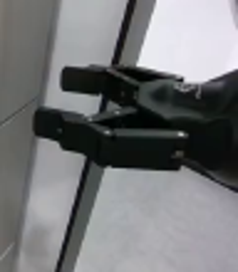
视觉工具实际返回图片 3
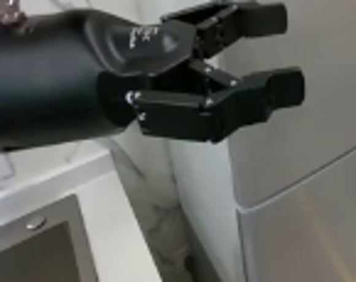
视觉工具实际返回图片 4
视觉工具实际返回图片 5
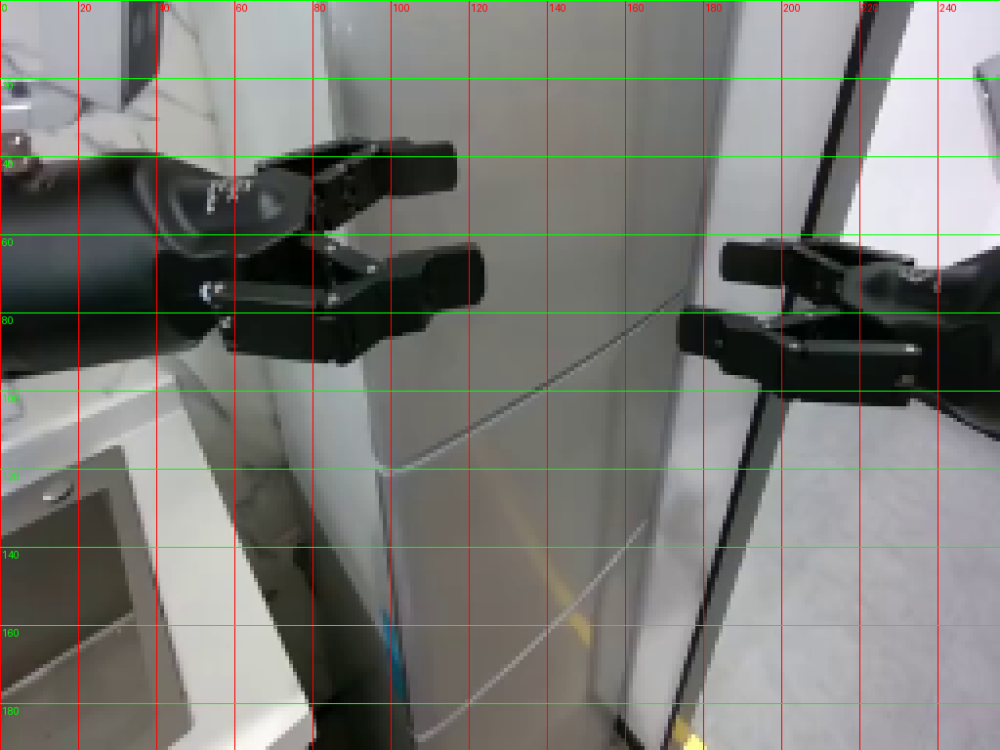
视觉工具实际返回图片 6
视觉工具实际返回图片 7
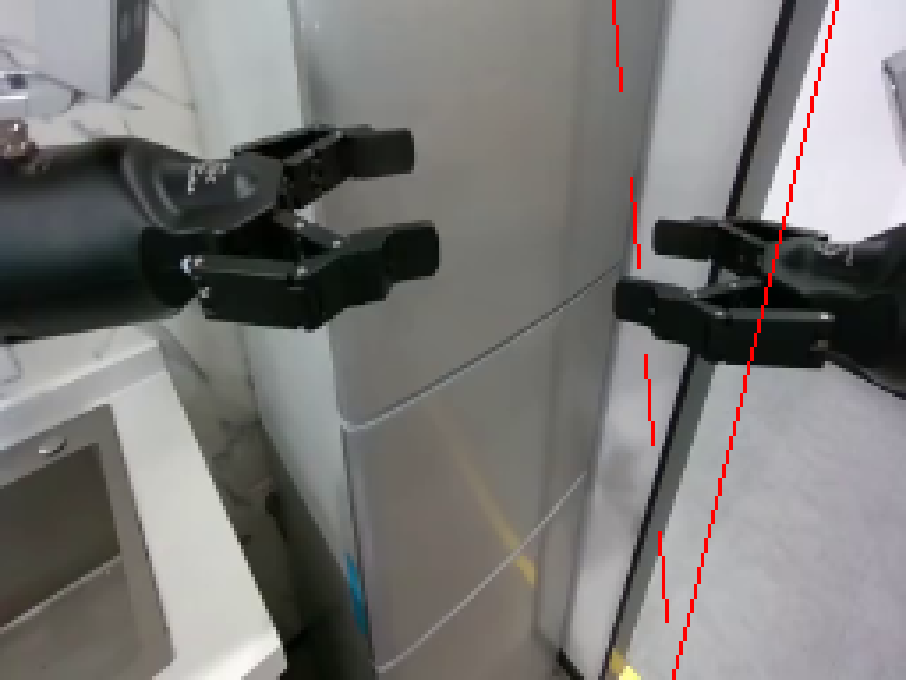
视觉工具实际返回图片 8

视觉工具实际返回图片 9
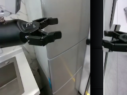
视觉工具实际返回图片 10
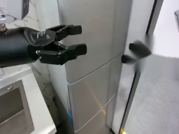
视觉工具实际返回图片 11
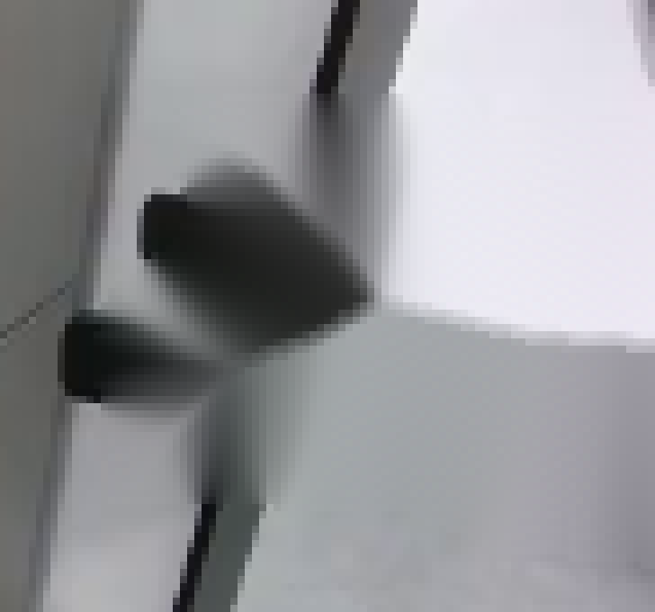
视觉工具实际返回图片 12
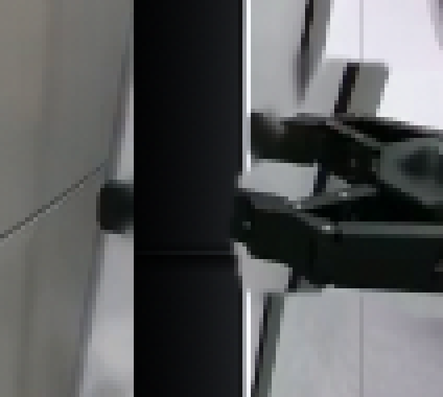
视觉工具实际返回图片 13
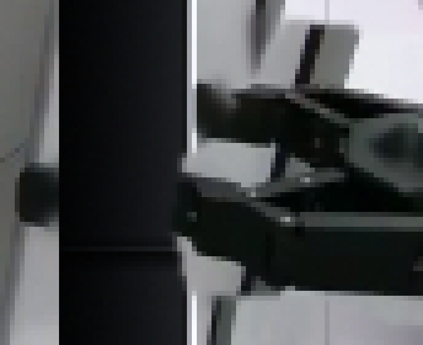
视觉工具实际返回图片 14
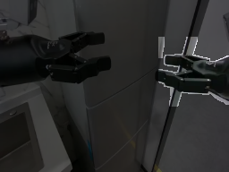
视觉工具实际返回图片 15
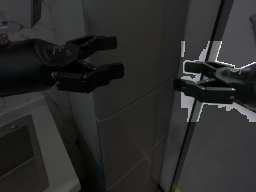
视觉工具实际返回图片 16
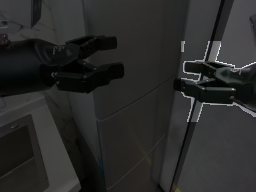
视觉工具实际返回图片 17
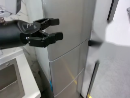
视觉工具实际返回图片 18
视觉工具实际返回图片 19
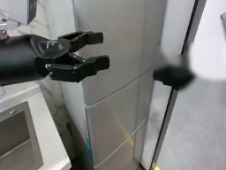
视觉工具实际返回图片 20

视觉工具实际返回图片 21

视觉工具实际返回图片 22
视觉工具实际返回图片 23
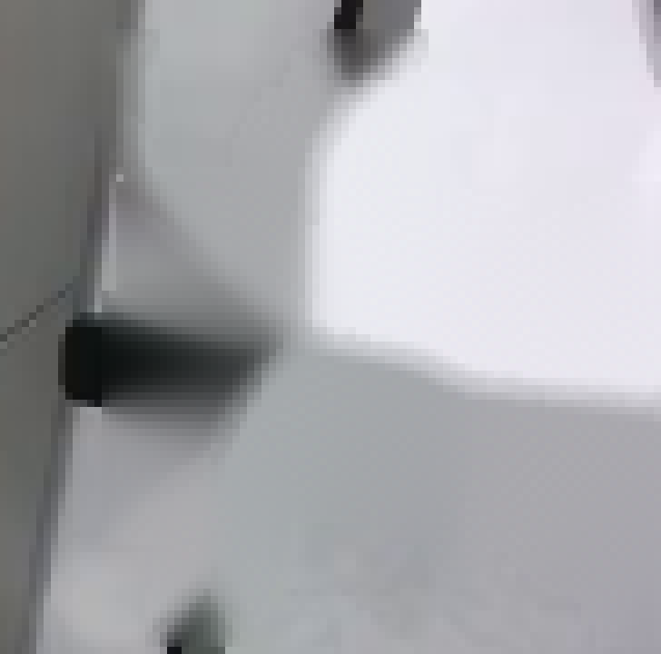
视觉工具实际返回图片 24
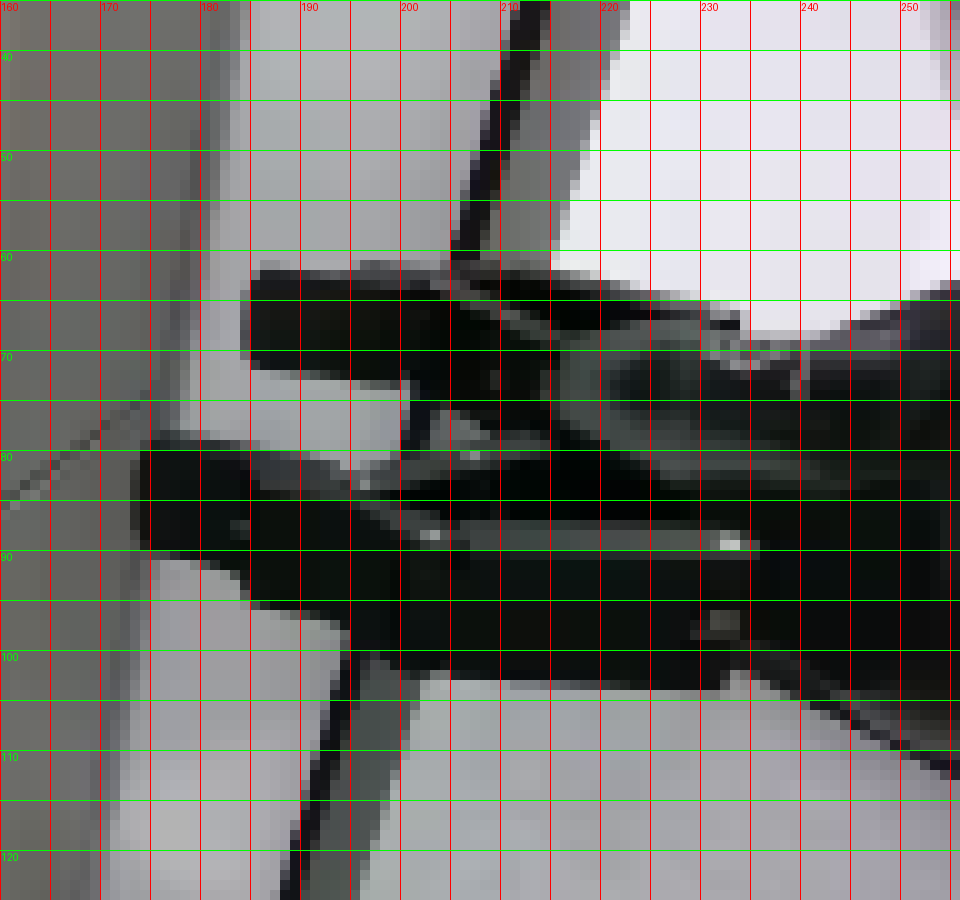
视觉工具实际返回图片 25
视觉工具实际返回图片 26

视觉工具实际返回图片 27
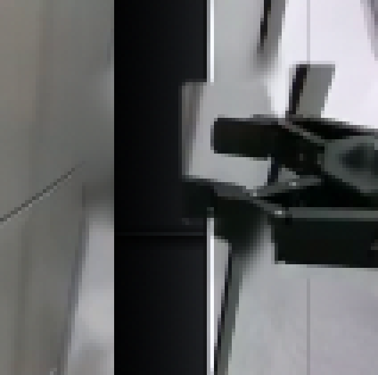
视觉工具实际返回图片 28
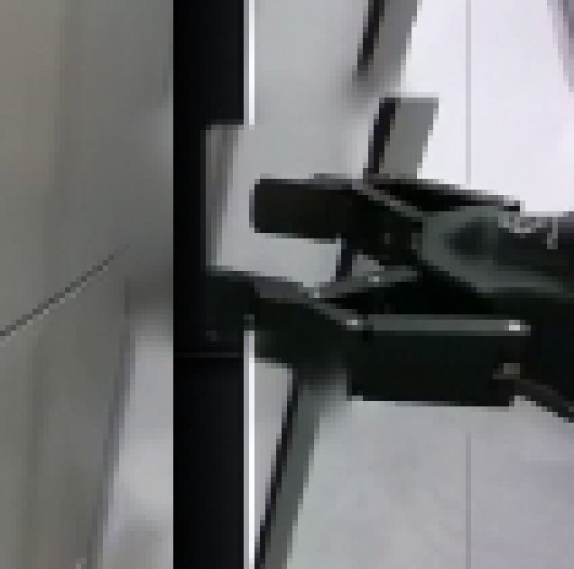
视觉工具实际返回图片 29
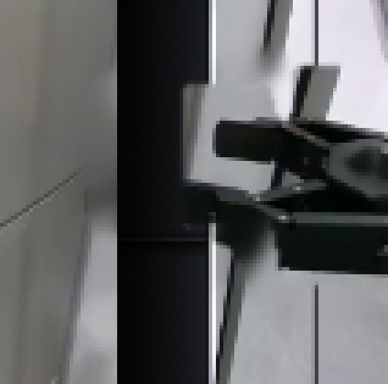
视觉工具实际返回图片 30
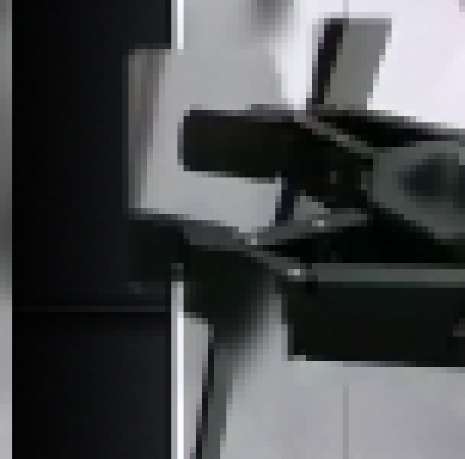
视觉工具实际返回图片 31

视觉工具实际返回图片 32
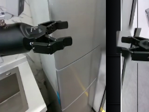
视觉工具实际返回图片 33
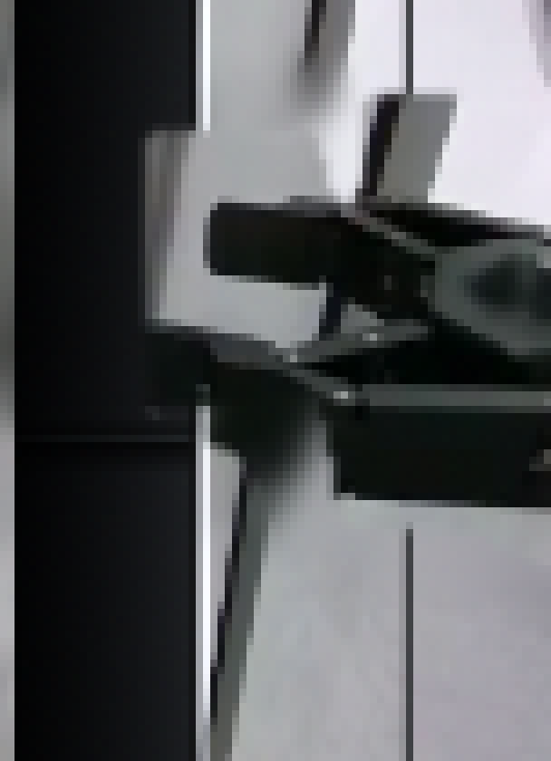
视觉工具实际返回图片 34
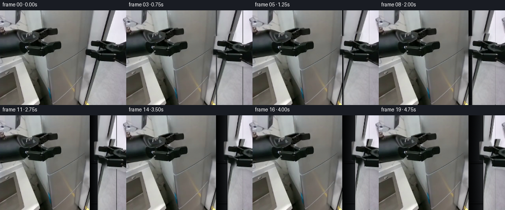
保存候选 5 份；完成命令 39 次；可验证图片返回 34 张。原始 API 响应与完整日志保留在本地。